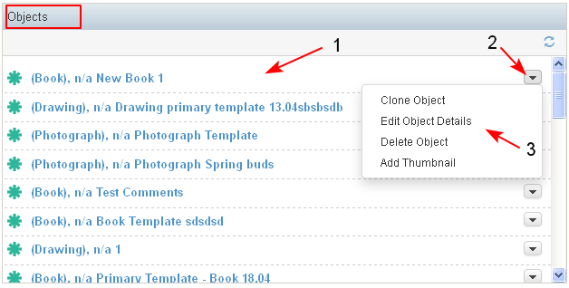
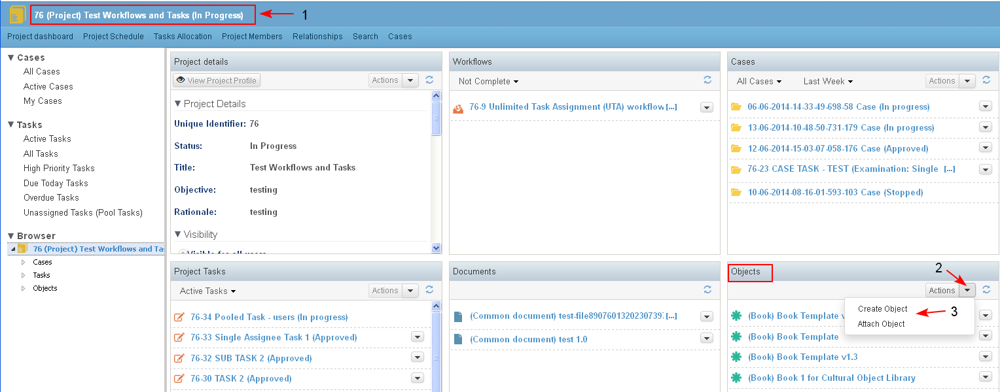

The Objects dashlet is context dependent and shows different content for the different dashboards.
In the content is displayed only information for the specific domain business objects.
- On the Personal dashboard are displayed objects created/ updated in the last 28 days by the user or such flagged as favorites (not ready).
- On the Project dashboard in the dashlet are displayed recently created/ updated/ associated objects (object created/ updated the last 28 days) in the project and all its sub projects/ cases.
- On the Subproject/ Cases dashboard in the dashlet are displayed recently created/ updated/ associated objects (object created/ updated the last 28 days) in the sub project/ case.
The objects are sorted by date of create/ update and latest ones are on the top (1).
The objects in the dashlet are in a list view, which means that for an object are displayed: Icon, Object type, Object ID - the unique object ID, Object Name - the Title of the object, Created by, Created on. The ID, Type and Name are a direct link to open the correspondent object landing page.
Next to each object in the dashlet there is a list with available actions (2-3) on the object (restricted by user role in the project and case dashboards), which in general include: Clone Object, Edit Object Details, Add Thumbnail

- In the Project dashboard (1) the user is able directly from the Objects dashlet to create or attach objects in the project (2-3).
The newly created object is created in the object library and a relationship of type "Part of" is created with the project.
